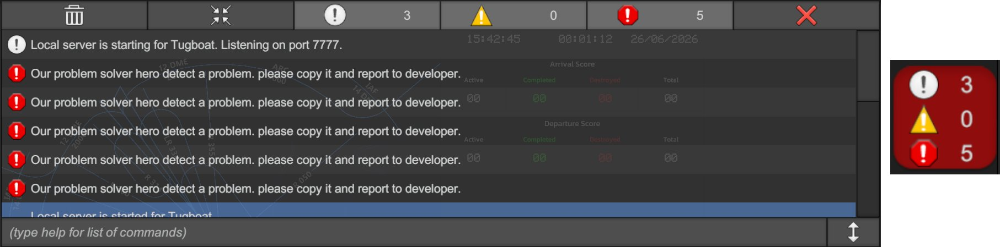

At Azmi Studio, our team is deeply committed to ensuring your experience is flawless. We are always available to provide dedicated support and technical guidance whenever you need us. Your project success is our priority, and we are only a message away.
How to Reach Us:
While our support team is always available to assist you, we encourage you to perform these quick checks first if you encounter any irregularities. Although these steps seem very simple, we often overlook or accidentally miss these basic details during operation. Verifying these common points can quickly resolve many issues or at least make the system ready for the next stage even before you need professional assistance.
After verifying the system checklist, if you still encounter any irregularities, do not worry—you are already familiar with the setup and can often resolve these minor issues yourself. While the following steps are not guaranteed "fixes" for every scenario, they are effective workarounds that resolve most common hiccups. Give them a try first, and if the problem persists, our support team is always here to provide expert assistance.
Likely Cause: The system failed to detect the display, often because the TV was turned off during the server boot process.
Corrective Action: Perform a full power cycle. Completely shut down the entire system, wait for a while, and then power on the TVs first. Once all screens are active, boot the server computer again.
Likely Cause: Our software and system require the monitors to be connected in a very specific order. This issue occurs if the display configuration has been reset, the cables were swapped, or the system misidentified the display sequence during startup.
Corrective Action: Right-click on your desktop and select Display Settings. Scroll down to the Multiple displays section and click the Identify button. This will display a large number on each screen so you can verify the current order (Standard monitor should be 1, and the 180° panorama TVs should be 2, 3, and 4 respectively). If the order is incorrect, shuffle the HDMI cables at the back of the server pc to match the required sequence. Restart the system once finished to ensure the software re-detects the correct layout.
Likely Cause: The source files might have been moved, renamed, or deleted from the original directory. As this is a Unity-based build, the application requires all supporting files to remain in their original location to function.
Corrective Action: Verify the original installation folder to ensure all components are present, as listed in the Directory Structure (Section 2.2). Check that the BAF ATC Simulator_Data folder and all core files (such as UnityPlayer.dll) are intact. If the structure has been altered, move the files back to their original path. Finally, launch the application as an administrator directly from the BAF ATC Simulator.exe file.
Likely Cause: This is often caused by the GPU overheating during long hours of operation, or outdated graphics drivers failing to handle the rendering load.
Corrective Action: Ensure the server environment has proper ventilation to prevent the GPU from overheating. Update your graphics drivers to the latest version and verify that the Power Management Mode is set to "High Performance." In the simulator's main settings menu, locate the Quality dropdown and switch to a lower quality level to stabilize the frame rate.
Likely Cause: This occurs if the server station and the client stations are loaded with different airport maps (e.g., one is running VGHS while another is on VGJR).
Corrective Action: Before starting your session, ensure that every connected station (both server and all clients) has selected and loaded the exact same airport map. If the airplane appears misplaced, stop the simulation, confirm that everyone is on the same airport, and restart the session to ensure proper synchronization.
Likely Cause: The issue may arise from incorrect sound device selection in the operating system, a muted channel, or a loose connection in the audio interface.
Corrective Action: Ensure the system volume is not muted at any point. Select the correct output device in Windows Sound settings. If audio is still missing, check the physical connections between the server and the audio interface.
Likely Cause: The specific audio data might be missing from the files. However, this is a critical component and should never happen under normal operation.
Corrective Action: First, ensure that your audio output is working properly by following the steps in Section 6. If the audio is confirmed to be working but the pilot call still fails to play, please document the issue by noting the call sign, the flight phase (e.g., taxi, departure, arrival), and the specific audio message that is missing. If possible, capture a screenshot of the simulation state when the error occurred and share these details with the development team for analysis.
Still facing issues? If the issue is not yet resolved or you encounter any complex scenario, do not hesitate to contact our technical support line. We are here to help!
We haven’t just delivered the software and walked away; we are with you every step of the way. Our system operates as a silent sentinel in the background, constantly monitoring performance to ensure everything runs smoothly. Most of the time, you won’t even know it’s there.

However, in the rare event that an error occurs, our hidden "hero"—the In-Game Debug Console—will instantly appear. We genuinely hope you never have to encounter it, but if a glitch happens, this console is your direct line to a quick resolution.